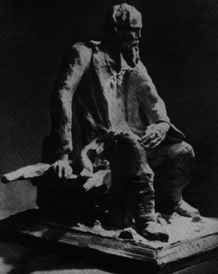
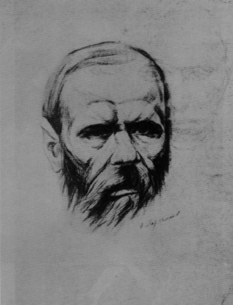

Page index / courses
CPstudy.html
DOSTOYEVSKY'S
CRIME AND PUNISHMENT
Dostoevsky as convict. Sculpture by S.T.Konenkov.
Courtesy of Dostoevsky: Works and Days
by Avrahm Yarmolinsky (Funk & Wagnalls, 1971)
Electronic Text of Crime and Punishment
CRIME AND PUNISHMENT
by Virginia C. Crosa & Alexander P. Lee
(Revised by Kenneth Nagle & Oksana Romina)

Dostoevsky as convict. Sculpture by S.T.Konenkov.
Courtesy of Dostoevsky: Works and Days
by Avrahm Yarmolinsky (Funk & Wagnalls, 1971)
Electronic Text of Crime and Punishment
A Russian-English
Text of Crime and Punishment
CRIME AND PUNISHMENT SUMMARY AND STUDY GUIDE
